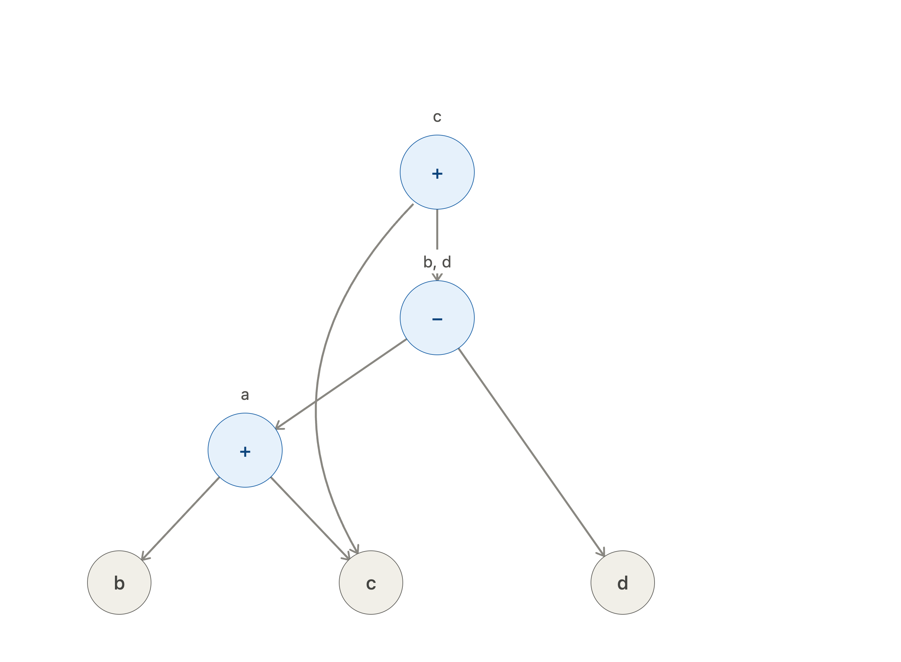

Instituto Tecnológico de Oaxaca · Ingeniería en Sistemas Computacionales
Optimización de código:
costo, criterios y análisis
de flujo de datos
Lenguajes y Autómatas II — Unidad 3
3.2.1
Costo de ejecución
memoria · registros · pilas
3.2.2
Criterios para mejorar
el código
3.2.3
Herramientas para el análisis del flujo de datos
Basado en Aho, Lam, Sethi & Ullman (2008); Louden (2004); Cooper & Torczon (2012)
contexto · ¿dónde vive la optimización dentro del compilador?
La optimización es una fase opcional pero decisiva
- Su meta: producir código equivalente pero más rápido, más pequeño o con menor consumo de energía.
- Para decidir qué mejorar, primero hay que saber qué cuesta ejecutar un programa → 3.2.1.
Aho, Lam, Sethi & Ullman (2008), cap. 8–9
3.2.1
Costo de ejecución
El precio de correr un programa se paga en dos monedas: tiempo (ciclos de CPU) y espacio (memoria). Tres recursos concentran ese costo:
memoria · registros · pilas
3.2.1 · costo de ejecución → memoria
Organización de la memoria en tiempo de ejecución
- Código: instrucciones; tamaño fijo, conocido al compilar.
- Datos estáticos: globales y constantes; dirección fija → acceso barato.
- Montículo (heap): datos con vida arbitraria (
new,malloc); asignar y liberar cuesta tiempo de gestión. - Pila: llamadas a procedimientos; crece y se contrae automáticamente.
Aho et al. (2008), cap. 7 "Entornos en tiempo de ejecución"
3.2.1 · costo de ejecución → registros
Registros: el recurso más rápido… y el más escaso
| nivel | costo relativo de acceso |
|---|---|
| registro | ≈ 1 ciclo — gratis |
| caché L1 | unos pocos ciclos |
| memoria RAM | decenas–cientos de ciclos — caro |
Órdenes de magnitud: la lección es la jerarquía, no la cifra exacta.
- Un procesador típico ofrece solo 16–32 registros de propósito general.
- Decidir qué variables viven en registros es la asignación de registros.
- Se modela como coloreo de grafos de interferencia: problema NP-completo → se usan heurísticas.
- Si faltan registros, hay derrame (spill): la variable regresa a memoria y el costo sube.
Aho et al. (2008), §8.8; Cooper & Torczon (2012), cap. 13 "Register Allocation"
3.2.1 · costo de ejecución → pilas
La pila y el registro de activación
- Cada llamada a un procedimiento apila un registro de activación (marco); al retornar, se desapila.
- El costo de una llamada incluye: pasar parámetros, guardar la dirección de retorno, salvar registros y reservar locales.
- La recursión profunda multiplica marcos → más memoria y más tiempo.
- Por eso optimizaciones como el inlining o la eliminación de recursión de cola atacan directamente este costo.
Aho et al. (2008), §7.2; Louden (2004), cap. 7
3.2.1 · ejemplo · el mismo enunciado, dos costos distintos
Ejemplo: a = b + c en una máquina de registros
Variables en memoria
LD R1, b // cargar b (acceso RAM) LD R2, c // cargar c (acceso RAM) ADD R1, R1, R2 ST a, R1 // guardar a (acceso RAM)
4 instrucciones · 3 accesos a memoria
Variables ya asignadas a registros
ADD R3, R1, R2 // a = b + c // b vive en R1, c en R2, a en R3
1 instrucción · 0 accesos a memoria
Conclusión: el costo no depende solo del código fuente, sino de dónde viven los datos. Optimizar = mover el trabajo hacia los recursos baratos.
Modelo de máquina objetivo de Aho et al. (2008), §8.1–8.2
3.2.2
Criterios para mejorar el código
No toda transformación vale la pena. El libro del dragón fija tres condiciones que toda optimización debe cumplir:
1 · Corrección
Preservar el significado: el programa optimizado produce exactamente los mismos resultados.
2 · Mejora real
Debe acelerar el programa en promedio (o reducir su tamaño / energía) de forma medible.
3 · Costo razonable
El esfuerzo de implementarla y el tiempo extra de compilación deben valer la pena.
Aho, Lam, Sethi & Ullman (2008), §9.1
3.2.2 · criterios → transformaciones que preservan la función
Cuatro mejoras clásicas (independientes de la máquina)
Plegado de constantes
x = 60 * 60; → x = 3600;
Evaluar en tiempo de compilación lo que no cambia en ejecución.
Subexpresiones comunes
d = (a+b)*c; e = (a+b)*f;
→ t = a+b; d = t*c; e = t*f;
Calcular una sola vez lo que se repite.
Propagación de copias
x = y; z = x + 1; → z = y + 1; // x puede morir
Usar el valor original y dejar la copia sin usos.
Eliminación de código muerto
x = y; // nadie usa x → (se elimina)
Quitar instrucciones cuyo resultado nunca se usa.
Aho et al. (2008), §9.1; Louden (2004), §8.9
3.2.2 · criterios → los ciclos primero: ahí vive el 90 % del tiempo
Optimización de ciclos
- Movimiento de código invariante: sacar del ciclo lo que no cambia entre iteraciones.
- Reducción de fuerza: sustituir operaciones caras por baratas (× → +).
- Variables de inducción: detectar variables que avanzan en progresión y fusionarlas.
// antes: una multiplicación por vuelta while (i < n) { t = 4 * i; suma += A[t]; i++; } // después: reducción de fuerza t = 4 * i; while (i < n) { suma += A[t]; t += 4; i++; }
Regla práctica del libro del dragón: mejorar el ciclo interno rinde más que cualquier otra parte del programa.
Aho et al. (2008), §9.1.7–9.1.8 y §8.7
3.2.2 · ejemplo integrador · varias mejoras encadenadas
Antes y después, en código de tres direcciones
Sin optimizar — 6 instrucciones por vuelta
L1: t1 = 4 * i // mult cara t2 = a[t1] t3 = 4 * i // ¡repetida! t4 = b[t3] t5 = t2 + t4 s = s + t5 i = i + 1 if i < n goto L1
Optimizado — subexpresión común + fuerza
t1 = 4 * i // fuera del ciclo L1: t2 = a[t1] t4 = b[t1] // reutiliza t1 t5 = t2 + t4 s = s + t5 t1 = t1 + 4 // suma, no mult if t1 < 4*n goto L1
Resultado: ninguna multiplicación dentro del ciclo y una instrucción menos por vuelta — mismos resultados, menor costo. ¿Cómo sabe el compilador que estas transformaciones son seguras? → 3.2.3.
Adaptado del ejemplo de quicksort de Aho et al. (2008), §9.1
3.2.3
Herramientas para el análisis
del flujo de datos
Para transformar código sin romperlo, el compilador necesita "ver" cómo viajan los valores por el programa. Sus instrumentos: bloques básicos, grafos de flujo, ecuaciones de flujo de datos y DAG.
3.2.3 · herramienta 1 · el grafo de flujo de control (CFG)
Bloques básicos y grafo de flujo
- Bloque básico: secuencia máxima de instrucciones con una entrada (la primera) y una salida (la última); se detecta con las reglas de los líderes.
- Grafo de flujo: nodos = bloques; aristas = posibles saltos entre ellos.
- Una arista de regreso (B3 → B2) delata un ciclo: el blanco favorito del optimizador.
Aho et al. (2008), §8.4; Louden (2004), §8.9
3.2.3 · herramienta 2 · las ecuaciones de flujo de datos
Análisis de flujo de datos: la matemática detrás
Sobre el grafo de flujo se plantean ecuaciones por bloque; resolverlas de forma iterativa revela hechos garantizados sobre los valores del programa:
SAL[B] = genB ∪ ( ENT[B] − elimB )
lo que sale de un bloque = lo que genera ∪ lo que entra y no fue eliminado dentro de él.
Definiciones de alcance
¿Qué asignación de x puede llegar a este punto? Base de la propagación de constantes.
Variables vivas
¿Se usará x más adelante? Si no, su registro se libera y su código puede morir.
Expresiones disponibles
¿a+b ya fue calculada en todo camino hasta aquí? Justifica eliminar subexpresiones comunes.
Aho et al. (2008), §9.2; Cooper & Torczon (2012), cap. 9
3.2.3 · herramienta 3 · el DAG de un bloque básico
DAG: grafo dirigido acíclico
- Representa un bloque básico: hojas = valores iniciales; nodos internos = operaciones.
- Si una expresión se repite, ambas apuntan al mismo nodo → detecta subexpresiones comunes automáticamente.
- Los nodos sin etiqueta viva al final son código muerto.
a = b + c b = a - d c = b + c // b ya cambió → nodo nuevo d = a - d // ¡mismo nodo que b! (compartido)
Aho et al. (2008), §8.5 "Optimización de bloques básicos"

fuentes · bibliografía en formato APA
Referencias
- Aho, A. V., Lam, M. S., Sethi, R., & Ullman, J. D. (2008). Compiladores: principios, técnicas y herramientas (2.ª ed.). Pearson Educación. — capítulos 7, 8 y 9.
- Louden, K. C. (2004). Construcción de compiladores: principios y práctica. Thomson. — capítulos 7 y 8.
- Cooper, K. D., & Torczon, L. (2012). Engineering a Compiler (2nd ed.). Morgan Kaufmann. — capítulos 8, 9 y 13.
- Muchnick, S. S. (1997). Advanced Compiler Design and Implementation. Morgan Kaufmann. — parte II, análisis de flujo de datos.
Presentación elaborada para Lenguajes y Autómatas II · Unidad 3 · ITO / TecNM.